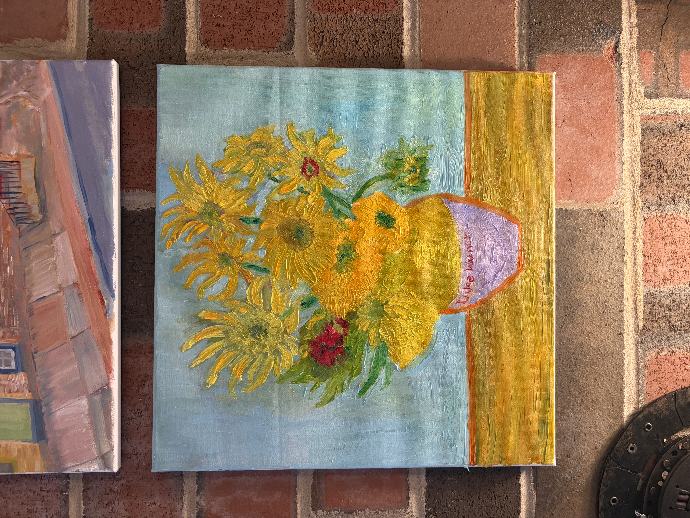
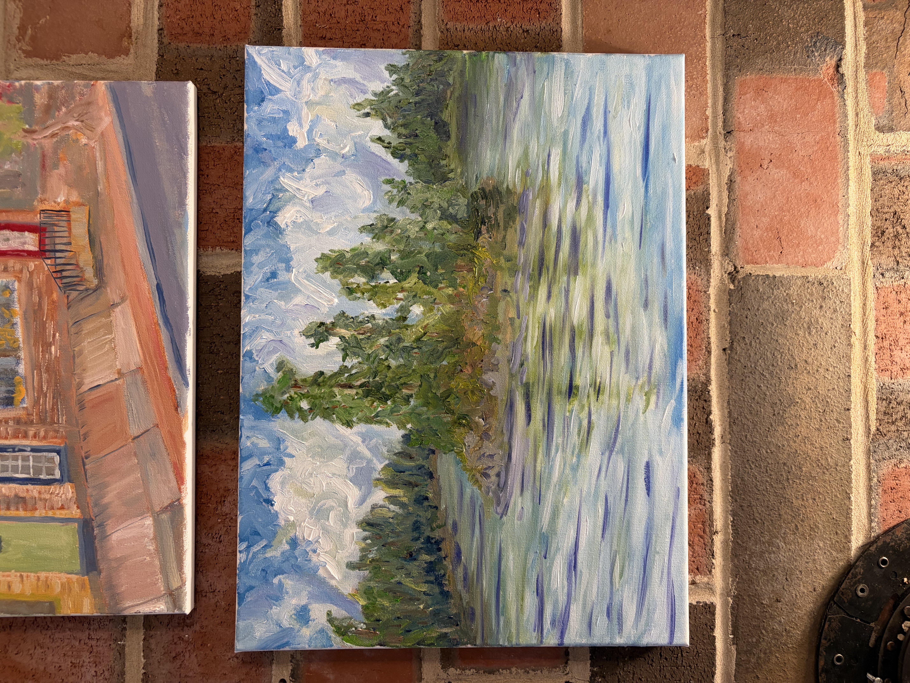
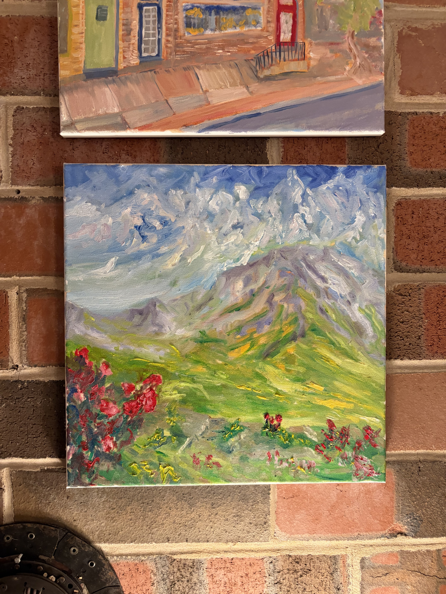
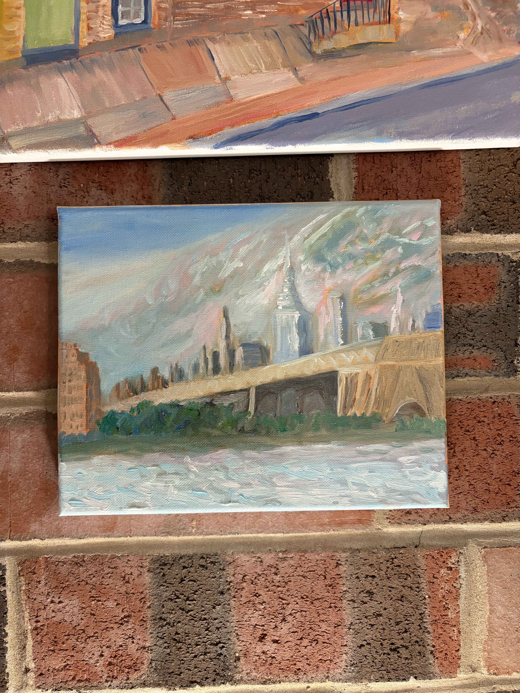
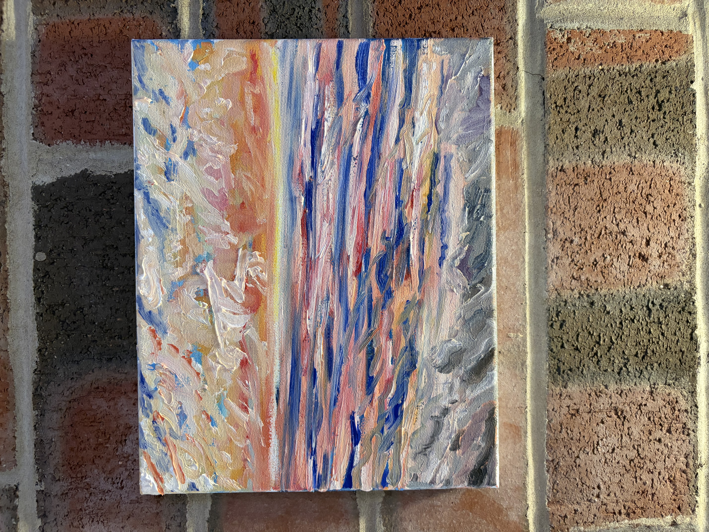
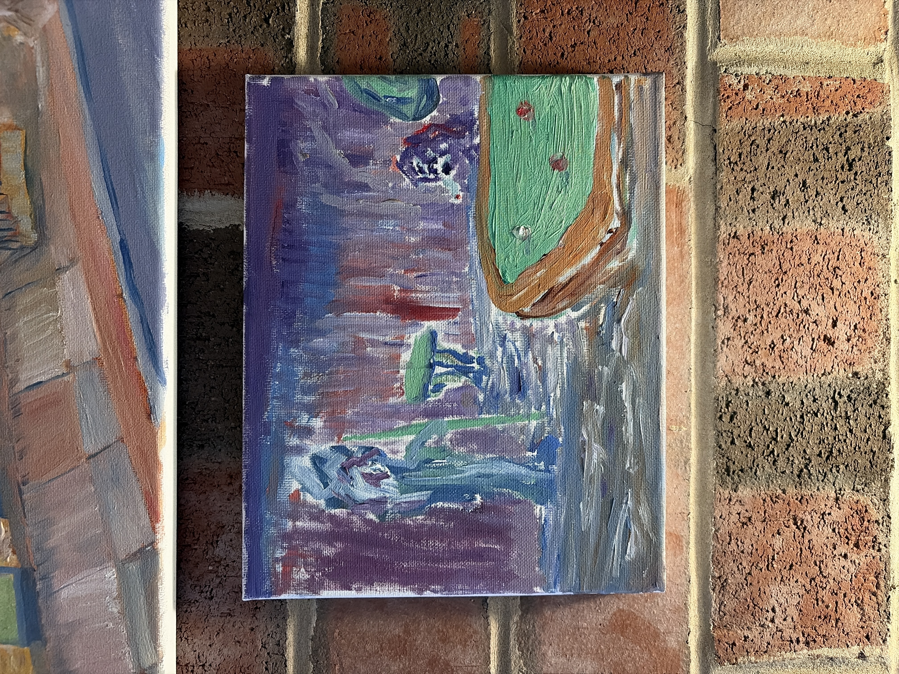
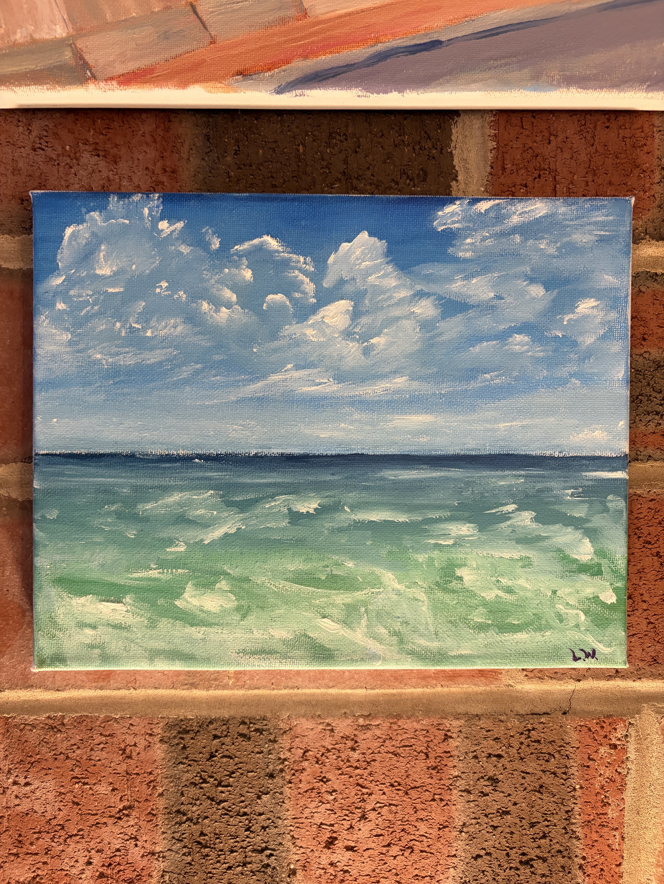

A working record of paintings — landscapes, still lifes, storefronts, and studies of sky and water, made one session at a time, in oil.

A studio still life, worked wet-into-wet in a single sitting — the classic subject as a color exercise as much as a bouquet.
Oil on canvas
A small tree-covered island on calm water, painted for the reflections as much as the landscape itself.
Oil on canvas
Wildflowers in the foreground set against a hazy mountain ridge — a study in atmospheric depth.
Oil on canvas
A hazy river crossing, painted for the soft edges where architecture dissolves into distance.
Oil on canvas
Warm sky over cold water — a quick study chasing a fast-changing sky.
Oil on canvas
An interior study built from cool purples and a single hot green table.
Oil on canvas
Close-in ocean study, painted for the movement and color shift in the surf.
Oil on canvasThe full gallery holds the complete record — every study, every session, in one place.
View full gallery →One small study most days — a discipline more than a portfolio piece. This log tracks the streak, not the outcome.